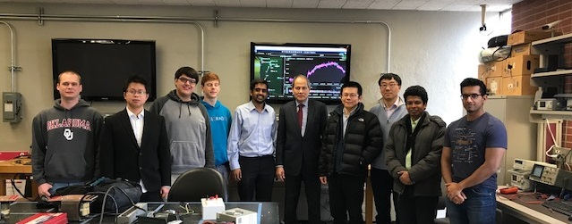

Professor Rahman visited the LEEPS facility at The University of Oklahoma on March 1 2019.
Professor Rahman is the founding director of the Advanced Research Institute at Virginia Tech, USA where he is the Joseph R. Loring professor of electrical and computer engineering. He also directs the Center for Energy and the Global Environment He is a Life Fellow of the IEEE and an IEEE Millennium Medal winner. He is the President of the IEEE Power and Energy Society (PES). He was the founding editor-in-chief of the IEEE Electrification Magazine and the IEEE Transactions on Sustainable Energy. In 2006 he served on the IEEE Board of Directors as the vice president for publications. He is a distinguished lecturer for the IEEE Power & Energy Society and has lectured on renewable energy, energy efficiency, smart grid, electric power system operation and planning, etc. in over 30 countries. He served as the chair of the US National Science Foundation Advisory Committee for International Science and Engineering from 2010 to 2013. He has conducted several energy efficiency related projects for Duke Energy, Tokyo Electric Power Company, the US Department of Defense, the State of Virginia and the U.S. Department of Energy.
